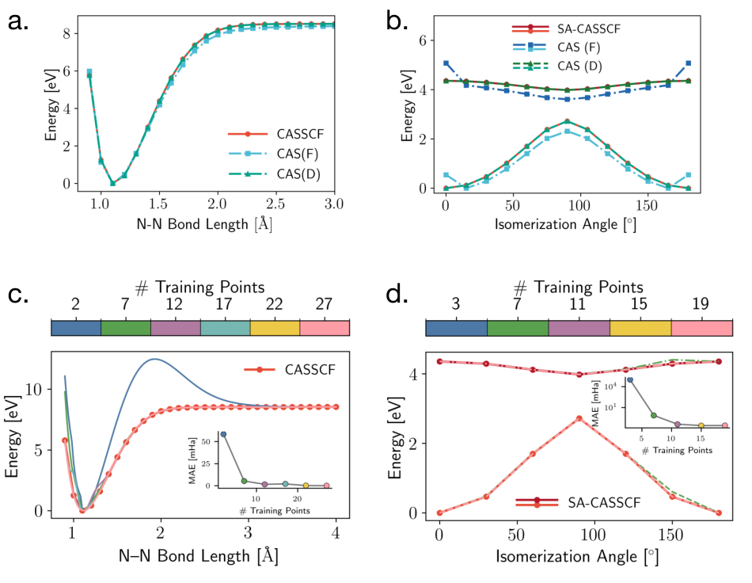
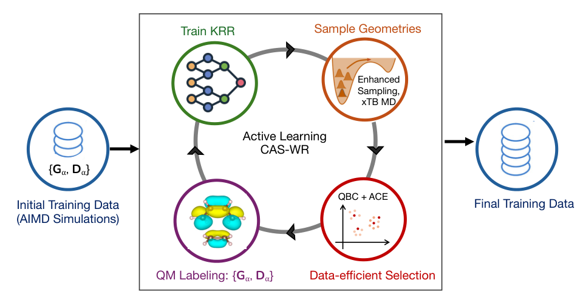
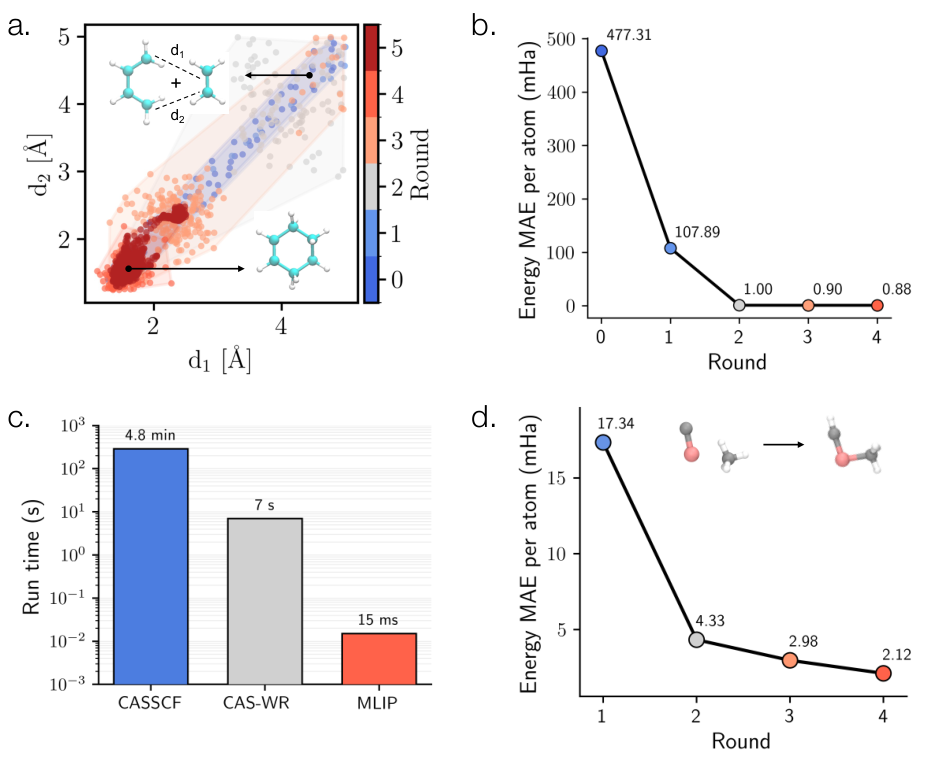
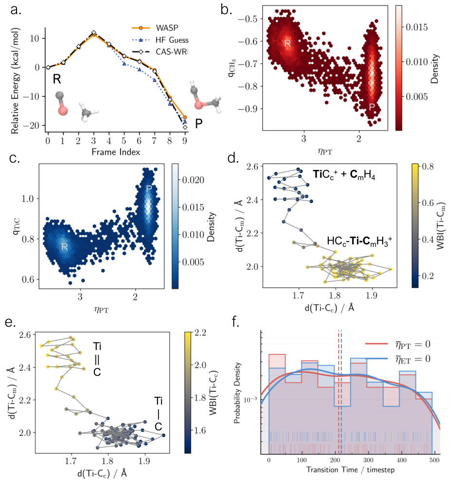
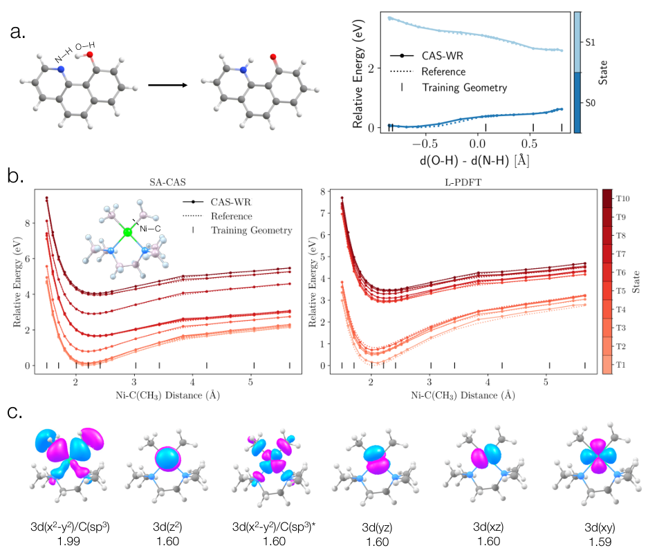

CAS-WR：给多参考机器学习势的反应轨迹补回电子波函数
论文原文 ↗原文：Aniruddha Seal、Bhavnesh Jangid、Helen S. Clifford、Andrew L. Ferguson、Laura Gagliardi，Machine Learning the Complete Active-Space Wavefunction Reconstruction，arXiv:2611.06779，2026年11月4日。原文 ·
机器学习势能够把昂贵量子化学计算转成可运行的反应轨迹，但输出通常只有能量和力。当甲烷的一根C—H键断裂、氢移向催化剂时，轨迹会告诉我们原子怎样移动，却不会直接告诉我们电子流向哪里、哪条键在失去键级，或者几个电子构型怎样共同参与反应。
这在多参考体系中尤其重要。断键、开壳层金属反应或激发态过程，常常需要多个电子排布共同描述；用一个占据方式解释所有结构，可能丢掉关键电子变化。作者提出CAS-WR，在已有反应结构上快速重建完全活性空间波函数，让电子结构也能像原子坐标一样沿轨迹连续分析。
先解释CASSCF里真正昂贵的环节
完全活性空间自洽场方法，即CASSCF，先选出一组与反应有关的轨道和电子。CAS(6e,6o)表示把六个电子放进六个活性轨道中，考虑符合要求的不同电子配置；这些配置按不同权重叠加，形成多构型波函数。
CASSCF同时优化两件事：轨道的形状，以及配置叠加的系数。重复调整轨道需要多轮迭代，而且可能有多个局部解。沿反应轨迹独立计算相邻结构时，轨道优化有时会落到不同解，给电子性质带来不连续的变化。
CASCI则固定轨道，只在这个轨道空间中求配置混合。因此，如果能够直接给出接近目标CASSCF解的轨道，就能省掉反复的轨道优化，仍通过量子化学求解得到完整CAS波函数。CAS-WR采用的正是这条路线。
为什么学习一阶约化密度矩阵
一阶约化密度矩阵，简称1-RDM，记录电子的一粒子分布及相干信息。对它做适当的本征分解，得到自然轨道和自然占据数；后者说明每个自然轨道平均容纳多少电子。多个轨道具有明显偏离整数的占据，是多构型电子结构的重要表现。
作者比较了两种可以从CASSCF参考解提取的表示：有效Fock矩阵F，以及1-RDM矩阵D。分别从这两种矩阵恢复轨道，再做CASCI，检查它们能否重建参考能量曲线。

图1｜氮分子拉伸和fulvene异构化中，从1-RDM恢复的轨道更好地再现CASSCF曲线；下方显示增加训练点后的重建变化。
在氮分子断键和fulvene激发态扭转测试中，D提供的轨道比F更可靠，后一个体系的区别尤其明显。作者据此选用D作为学习目标：它直接包含多参考解的一粒子结构，而F对这些轨道信息的表达更间接。
这里有一个方法分工：D用于恢复合适的轨道空间，之后仍要做CASCI，求解电子配置的混合。最终可分析的多电子信息，来自这个重建后的波函数。
从一套原子坐标，怎样得到波函数
一次预测首先接收分子几何R，计算一电子哈密顿量矩阵h(R)。在所用原子轨道基组下，它由电子动能和原子核对电子的吸引等一电子项构成，把几何转换成一个与电子结构有关的算符表示。
接着，核岭回归模型比较h(R)与训练结构的一电子哈密顿量，预测收敛CASSCF的密度矩阵：
$$\widehat D[h(R)]=\sum_i\beta_iK(h_i,h(R)).$$
核函数K度量新结构与训练结构在这个表示中的相似性；训练得到的系数β将这些相似性组合成矩阵元素预测。这是监督学习的电子结构插值，不需要在新几何上重新优化一遍CASSCF轨道。
然后，在原子轨道重叠矩阵S定义的度量下，对预测D求自然轨道，按设定的活性空间组织轨道，再进行CASCI。CASCI求出配置系数，形成该几何上的多构型波函数。随后可以评价自然占据数、构型权重、电荷、自旋分布和键级等量，也可接入MC-PDFT或L-PDFT计算相应能量。
整条链是：原子结构 → 一电子哈密顿量 → 学习预测1-RDM → 自然轨道 → CASCI → 波函数与电子性质。 机器学习负责最耗时的轨道优化环节所需的信息，配置混合则继续由量子化学求解完成。
训练点怎样覆盖反应空间
仅在反应物和产物上提供训练数据并不足够。图1下方显示，随着反应坐标中间区域被加入，能量曲线才逐渐稳定地重建。对于多维反应，作者通过主动学习决定哪里需要新的CASSCF标注。

图2｜从初始电子结构数据出发，采样新几何，结合模型分歧与环境多样性选点，补充量子化学标签后重新训练。
第一步，用多个独立训练的核回归模型预测新几何的1-RDM，选出模型之间分歧较大的结构。这里关注的是电子结构预测的不确定性。第二步，在描述符空间用高斯过程多样性筛选，减少一批候选中相互重复的结构。所选结构再计算参考D，加入数据集，迭代更新模型。
作者先在丁二烯与乙烯的Diels–Alder环加成上实施这一流程。两根正在形成的C—C键定义了一部分反应进度，但训练构型来自更广的多维采样，使电子模型能够处理反应轨迹中的几何变化。

图3｜两种反应体系的主动学习收敛；左下比较TiC⁺体系的CASSCF、CAS-WR及MACE势计算时间。
图3b中，Diels–Alder体系由CAS-WR轨道得到的CASCI能量误差随主动学习显著降低。在另一个TiC⁺与甲烷体系中，作者直接复用先前WASP协议建立的多参考势数据；这套数据已为反应区域保持一致的活性空间和CASSCF解分支，因而电子结构模型与原有势能面有共同的参考来源。
计算时间比较中，TiC⁺体系一次CASSCF约4.8分钟，CAS-WR约7秒，MACE势约15毫秒。CAS-WR承担的是补回电子波函数的任务，相对重复CASSCF省去约一个数量级以上的时间；正文总结其加速量级约为30倍。
主要发现：甲烷断键时，质子和电子分别去了哪里
TiC⁺活化甲烷是文章最具体的机制应用。作者使用100条反应轨迹，逐结构重建波函数，跟踪氢、电荷与金属—碳键的变化。

图4｜反应路径能量、电荷和键级变化，以及100条轨迹中质子转移和电子转移的时间分布。
反应中，被转移的H保持正的Mulliken电荷；TiC片段变得更正，而甲基片段获得电子密度。结合原子运动，这对应质子移向TiC原来的碳端，电子则从TiC片段转向形成中的甲基片段。
Wiberg键级进一步描述了成键重排。键级是根据电子密度分配量化两个原子成键程度的指标：原有Ti—C键的键级下降，新形成的Ti—甲基碳键由接近零增长到约一。电荷和键级共同支持C—H键发生异裂、并伴随质子耦合电子转移的机制。
作者还分别定义核坐标和电子坐标：核坐标根据H与原甲基碳、TiC碳的配位关系描述质子转移；电子坐标根据TiC和甲基片段电荷差描述电子转移。将它们归一化后比较越过零点的时刻，100条轨迹的分布显示质子与电子转移总体同步。
这一结果说明波函数恢复的用途：原子轨迹提供“氢怎样走”，电子模型增加“电子怎样分配”，两者结合才可以在反应集合上比较质子转移与电子转移的相对时序。
激发态怎样接进同一套流程
作者进一步采用态平均1-RDM，恢复一组可用于多个电子态的轨道，再进行多态CASCI并接L-PDFT后处理。测试包括HBQ分子中的激发态质子转移，以及二烷基Ni配合物的Ni—C光解离。

图5｜HBQ质子转移和镍配合物Ni—C伸长的多态势能曲线，以及镍体系活性轨道。
两组一维势能切片使用少于全部采样构型40%的训练点，就能再现相应参考曲线。这把方法从基态反应的电子分析扩展到初步的激发态重建；不同电子态仍在恢复的轨道基组中通过多态量子化学计算获得。
对领域新增了什么
CAS-WR将多参考机器学习势的能力从核运动延伸到电子结构解释。它没有要求为电荷、键级、构型权重等每一种性质单独训练预测头，而是恢复一个能够产生这些观测量的CAS波函数。
方法中值得借鉴的是中间对象的选择：用1-RDM为较昂贵的轨道优化提供替代，再保留CASCI对多电子配置的求解。由此，长反应轨迹中的电子分布可以被系统评价，并用于理解成键、质子耦合电子转移及多态反应过程。
原始摘要完整中文翻译
机器学习原子间势使具有多参考方法精度的反应动力学成为可能，但它们不保留预测能量和力背后的电子结构。通过独立进行完全活性空间自洽场（CASSCF）计算来恢复这些信息，既昂贵，也可能产生不一致。我们提出完全活性空间波函数重建模型CAS-WR，它从CASSCF数据中学习依赖几何的电子结构，并在无需反复轨道优化的情况下重建CAS波函数。结合基于不确定度的主动学习，我们在Diels–Alder反应和TiC⁺催化的C—H活化中展示CAS-WR。该方法能够沿反应轨迹，对反应集合中的多构型电子结构开展分析。激发态质子转移和过渡金属光催化的初步应用表明，CAS-WR有望成为在复杂基态和激发态反应动力学中恢复电子结构的一条通用途径。